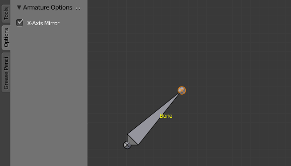
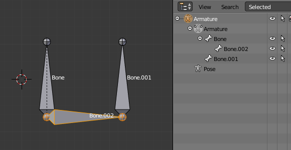
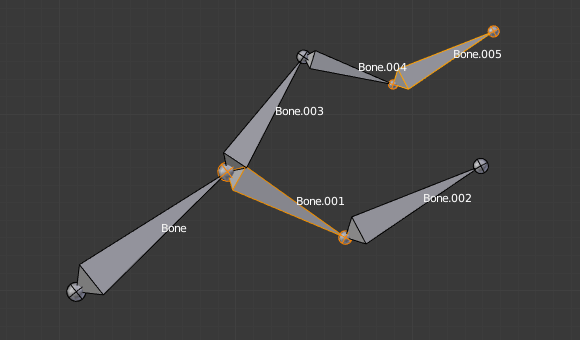
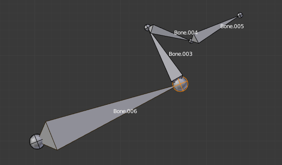

Editing Bones¶
Đẩy Trồi -- Extrude¶
Tham Chiếu -- Reference
| Chế Độ -- Mode: | Chế Độ Biên Soạn -- Edit Mode |
|---|---|
| Trình Đơn -- Menu: | |
| Phím Tắt -- Hotkey: | |
| E, Shift-E | |
When you press E, for each selected tip (either explicitly or implicitly), a new bone is created. This bone will be the child of "its" tip owner, and connected to it. As usual, once extrusion is done, only the new bones' tips are selected, and in grab mode, so you can place them to your liking. See Fig. Extrusion example..

An armature with three selected tips. |

The three extruded bones. |
You also can use the rotating/scaling extrusions, as with meshes, by pressing respectively E R and E S -- as well as locked extrusion along a global or local axis.

A single selected bone's tip. |

The two mirror-extruded bones. |
{kind=link}
Bones have an extra "mirror extruding" tool, called by pressing Shift-E. By default, it behaves exactly like the standard extrusion. But once you have enabled the X-Axis Mirror editing option (see X-Axis Mirror), each extruded tip will produce two new bones, having the same name except for the "_L"/ "_R" suffix (for left/right, see the next page). The "_L" bone behaves like the single one produced by the default extrusion -- you can grab/rotate/scale it exactly the same way. The "_R" bone is its mirror counterpart (along the armature's local X axis), see Fig. Mirror extrusion example..
Quan trọng
Canceling the extrude action causes the newly created bones to snap back to the source position, (creating zero length bones). These will be removed when exiting Edit Mode, however, they can cause confusion and it's unlikely you want to keep them. If you realize the problem immediately undo the extrude action.
In case you are wondering, you cannot just press X to solve this as you would in mesh editing, because extrusion selects the newly created tips, and as explained below the Delete tool ignores bones' joints. To get rid of these extruded bones without undoing, you would have to move the tips, then select the bones and delete (Delete Selected Bone(s)) them.
Mouse Clicks¶
Tham Chiếu -- Reference
| Chế Độ -- Mode: | Chế Độ Biên Soạn -- Edit Mode |
|---|---|
| Phím Tắt -- Hotkey: | |
| Ctrl-LMB | |
If at least one bone is selected, Ctrl-LMB-clicking adds a new bone.
About the new bone's tip:
After you Ctrl-LMB-clicked it becomes the active element in the armature, it appears to be right where you clicked, but (as in mesh editing) it will be on the plane parallel to the view and passing through the 3D cursor.
The position of the root and the parenting of the new bone depends on the active element:

Ctrl-clicking when the active element is a bone.
If the active element is a bone:
- The new bone's root is placed on the active bone's tip.
- The new bone is parented and connected to the active bone (check the Outliner in Fig. Ctrl-clicking when the active element is a tip.).

Ctrl-clicking when the active element is a tip.
If the active element is a tip:
- The new bone's root is placed on the active tip.
- The new bone is parented and connected to the bone owning the active tip (check the Outliner in Fig. Ctrl-clicking when the active element is a tip.).
{kind=link}
Ctrl-clicking when the active element is a disconnected root.
If the active element is a disconnected root:
- The new bone's root is placed on the active root.
- The new bone is not parented to the bone owning the active root (check the Outliner in Fig. Ctrl-clicking when the active element is a disconnected root.).
And hence the new bone will not be connected to any bone.

Ctrl-clicking when the active element is a connected root.
If the active element is a connected root:
- The new bone's root is placed on the active root.
- The new bone is parented and connected to the parent of the bone owning the active root (check the Outliner in Fig. Ctrl-clicking when the active element is a connected root.).
This should be obvious because if the active element is a connected root then the active element will be also the tip of the parent bone, so it is the same as the second case.
As the tip of the new bone becomes the active element, you can repeat these Ctrl-RMB several times, to consecutively add several bones to the end of the same chain.
Fill between Joints¶
Tham Chiếu -- Reference
| Chế Độ -- Mode: | Chế Độ Biên Soạn -- Edit Mode |
|---|---|
| Trình Đơn -- Menu: | |
| Phím Tắt -- Hotkey: | |
| F | |
The main use of this tool is to create one bone between two selected joints by pressing F, similar to how in mesh editing you can "create edges/faces".
If you have one root and one tip selected, the new bone:
- Will have the root placed on the selected tip.
- Will have the tip placed on the selected root.
- Will be parented and connected to the bone owning the selected tip.

Active tip on the left. |

Active tip on the right. |
If you have two tips selected, the new bone:
- Will have the root placed on the selected tip closest to the 3D cursor.
- Will have the tip placed on the other selected tip.
- Will be parented and connected to the bone owning the tip used as the new bone's root.

3D cursor on the left. |

3D cursor on the right. |
If you have two roots selected, you will face a small problem due to the event system in Blender not updating the interface in real-time.
When clicking F, similar to the previous case, you will see a new bone:
- With the root placed on the selected root closest to the 3D cursor.
- With the tip placed on the other selected root.
- Parented and connected to the bone owning the root used as the new bone's root.
If you try to move the new bone, Blender will update the interface and you will see that the new bone's root moves to the tip of the parent bone.

Before UI update (3D cursor on the left). |

After UI update, correct visualization. |
{kind=link}
Clicking F with only one bone joint selected will create a bone from the selected joint to the 3D cursor position, and it will not parent it to any bone in the armature.

Fill with only one tip selected. |

Fill with only one root selected. |
You will get an error when:
- Trying to fill two joints of the same bone.
- Trying to fill more than two bone joints.
Sao Chép -- Duplicate¶
Tham Chiếu -- Reference
| Chế Độ -- Mode: | Chế Độ Biên Soạn -- Edit Mode |
|---|---|
| Trình Đơn -- Menu: | |
| Phím Tắt -- Hotkey: | |
| Shift-D | |
Ghi chú
This tool works on selected bones; selected joints are ignored.
As in mesh editing, by pressing Shift-D the selected bones will be duplicated. The duplicates become the selected elements and they are placed in grab mode, so you can move them wherever you like.
If you select part of a chain, by duplicating it you will get a copy of the selected chain, so the copied bones are interconnected exactly like the original ones.
The duplicate of a bone which is parented to another bone will also be parented to the same bone, even if the root bone is not selected for the duplication. Be aware, though, that if a bone is parented and connected to an unselected bone, its copy will be parented, but not connected to the unselected bone (see Fig. Duplication example.).

An armature with three selected bones and a selected single root. |
{kind=link}
Tách Phân -- Split¶
Tham Chiếu -- Reference
| Chế Độ -- Mode: | Chế Độ Biên Soạn -- Edit Mode |
|---|---|
| Trình Đơn -- Menu: | |
| Phím Tắt -- Hotkey: | |
| Y | |
Disconnects the selection and clears the parent at the start and end. ToDo add.
Xóa Xương Được Chọn -- Delete Selected Bone(s)¶
Tham Chiếu -- Reference
| Chế Độ -- Mode: | Chế Độ Biên Soạn -- Edit Mode |
|---|---|
| Trình Đơn -- Menu: | |
| Phím Tắt -- Hotkey: | |
| X | |
This tool delete selected bones, selected joints are ignored.
If you delete a bone in a chain, its child(ren) will be automatically re-parented to its own parent, but not connected, to avoid deforming the whole armature.

An armature with two selected bones, just before deletion. |

The two bones have been deleted. Note that Bone.002, previously connected to the deleted Bone.001, is now parented but not connected to Bone. |
{kind=link}
Tan Biến -- Dissolve¶
Tham Chiếu -- Reference
| Chế Độ -- Mode: | Chế Độ Biên Soạn -- Edit Mode |
|---|---|
| Trình Đơn -- Menu: | |
| none | |
| Phím Tắt -- Hotkey: | |
| Ctrl-X | |
ToDo 2.76.
Hội Nhập các Xương -- Merge Bones¶
Tham Chiếu -- Reference
| Chế Độ -- Mode: | Chế Độ Biên Soạn -- Edit Mode |
|---|---|
| Trình Đơn -- Menu: | |
| Phím Tắt -- Hotkey: | |
| Alt-M | |
You can merge together several selected bones, as long as they form a chain. Each sub-chain formed by the selected bones will give one bone, whose root will be the root of the root bone, and whose tip will be the tip of the tip bone.
Confirm by clicking on .
If another (non-selected) chain origins from inside of the merged chain of bones, it will be parented to the resultant merged bone. If they were connected, it will be connected to the new bone.
Here is a strange subtlety (see Fig. Merge example.): even though connected (the root bone of the unmerged chain has no root sphere), the bones are not visually connected. This will be done as soon as you edit one bone, differently depending in which chain is the edited bone (compare the bottom two images of the example to understand this better).

An armature with a selected chain, and a single selected bone, just before merging. |

Bones Bone, Bone.001 and Bone.002 have been merged in Bone.006, whereas Bone.005 was not modified. Note Bone.003, connected to Bone.006 but not yet "really" connected. |

The tip of Bone.006 has been translated, and hence the root of Bone.003 was moved to the tip of Bone.006. |
{kind=link}
{kind=link}
Phân Chia -- Subdivide¶
Tham Chiếu -- Reference
| Chế Độ -- Mode: | Chế Độ Biên Soạn -- Edit Mode |
|---|---|
| Trình Đơn -- Menu: | |
| , | |
You can subdivide bones, to get two or more bones where there was just one bone. The tool will subdivide all selected bones, preserving the existing relationships: the bones created from a subdivision always form a connected chain of bones.
To create an arbitrary number of bones from each selected bone in the Subdivide Multi Operator panel.
- Số Phân Đoạn -- Number of Cuts
- Specifies the number of cuts. As in mesh editing, if you set n cuts, you will get n + 1 bones for each selected bone.

An armature with one selected bone, just before multi-subdivision. |

The selected bone has been "cut" two times, giving three sub-bones. |
Locking Bones¶
You can prevent a bone from being transformed in Edit Mode in several ways:
- All bones can be locked clicking on the Lock checkbox of their Transform panel in the Bones tab;
- Press Shift-W
- Select .
If the root of a locked bone is connected to the tip of an unlocked bone, it will not be locked, i.e. you will be able to move it to your liking. This means that in a chain of connected bones, when you lock one bone, you only really lock its tip. With unconnected bones, the locking is effective on both joints of the bone.
Đối Xứng Trục X -- X-Axis Mirror¶
Tham Chiếu -- Reference
| Chế Độ -- Mode: | Chế Độ Biên Soạn -- Edit Mode |
|---|---|
| Bảng -- Panel: |
This option enables automatic mirroring of editing actions along the X axis. Another very useful tool is the X-Axis Mirror editing option by , while Armature is selected in Edit Mode. When you have pairs of bones of the same name with just a different "side suffix" (e.g. ".R"/".L", or "_right"/"_left" ...), once this option is enabled, each time you transform (move/rotate/scale...) a bone, its "other side" counterpart will be transformed accordingly, through a symmetry along the armature local X axis. As most rigs have at least one axis of symmetry (animals, humans, ...), it is an easy way to spare you half of the editing work!
Xem thêm
Phân Tách Xương -- Separate Bones¶
You can, as with meshes, separate the selected bones in a new armature object , Ctrl-Alt-P and of course, in Object Mode, you can join all selected armatures in one , Ctrl-J.